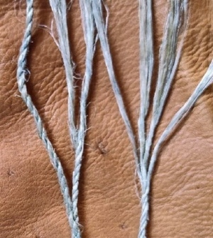

ⲣⲟ SB, ⲣⲁ F nn m, strand, ply of cord: Eccl 4 12 SB (MG 25 127) ϣⲟⲙⲛⲧ ⲛⲣⲟ (var Mor 18 27 S ⲕⲁⲡ) ἔντριτος; Mor 30 16 F thong ⲉⲥⲁⲓ ⲛⲅ̅ ⲉⲣⲁ = ib 29 14 S ⲕⲱⲃ = BMis 241 S ϣⲗⲟⲡ. ⲉⲙⲣⲱ B MG 25 359 this word ? Cf ? ⲣⲟ mouth III.
(noun male)
strand, ply of cord

complete
290a
See also:
Homonyms:
| view | ϣⲗⲟⲡ S | (noun male) ply, strand of cord1902 |
| view | ⲉⲣⲃⲱⲥ B | (noun male) rope of single ply2752 |
| view | ⲕⲁⲡ SB | (noun male) string of harp &c [χορδη]
thread, string, strand single hair letter of alphabet (ref to linear form)2861 |
Homonyms:
| view | ⲣⲟ SALB ⲣⲁ Sf ⲗⲁ F ⲣⲁ- S ⲣⲉ- SB ⲗⲉ- F ⲣⲱ⸗ SALBO ⲗⲱ⸗ F plural: ⲣⲱⲟⲩ SALB plural: ⲣⲟⲟⲩ A plural: ⲗⲱⲟⲩ F | (noun male) mouth [στομα]
edge of weapon door, gate [θυρα, πυλη]201 |
| view | ⲣⲱ SLB ⲣⲱⲱ S ⲣⲟⲩ A ⲣⲟ B ⲗⲱ F | (particle) enclitic particle, emphatic or explicative, often untranslatable
― same, again, also esp B ― emphasis or contrast indeed, but ― explicative ― emphasis, even, at all, at last ― in question, then ― after various particles, ⲁⲣⲏⲩ, perhaps, indeed379 |